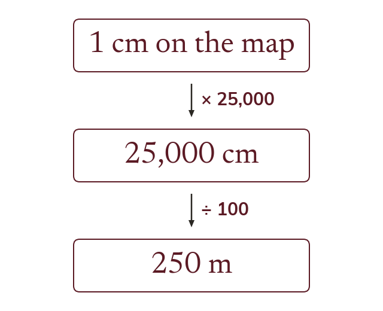

One unit stands for n
A scale of 1 : n means 1 drawing unit is n real units. So on a 1 : 25,000 map, 1 cm is 250 m.
A scale of 1 : n means 1 unit on the drawing stands for n of the same unit in real life. On a 1 : 25,000 map, 1 cm stands for 25,000 cm, which is 250 m.